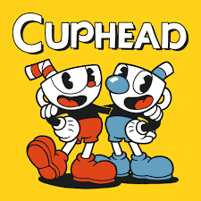
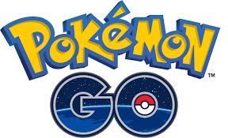

Unity es un motor de desarrollo de videojuegos y un entorno de desarrollo integrado (IDE) que proporciona una gama de herramientas para la creación de juegos 2D y 3D, así como aplicaciones interactivas.
Unity es un motor de desarrollo de juegos creado por Unity Technologies, lanzado por primera vez en 2005. Es ampliamente utilizado en la industria de los videojuegos, pero también es popular en la creación de aplicaciones interactivas, simulaciones, y experiencias de realidad aumentada y virtual. Unity es conocido por su facilidad de uso, su capacidad para desarrollar en múltiples plataformas y su gran comunidad de usuarios.
Renderizado Gráfico:
Unity permite la creación de gráficos tanto en 2D como en 3D, con soporte para shaders personalizados, iluminación avanzada, y efectos visuales.
Motor de Física:
Incluye un motor de física que permite simular interacciones físicas, como colisiones, gravedad y movimientos.
C# Scripting:
Unity utiliza el lenguaje de programación C# para escribir scripts que controlan la lógica del juego y las interacciones.
Editor Visual:
Unity ofrece un editor visual que facilita el diseño y la organización de niveles y escenas.
Multiplataforma:
Unity permite la exportación de juegos y aplicaciones a una amplia gama de plataformas, incluyendo consolas, PC, dispositivos móviles, y plataformas web.
Animación:
Herramientas para crear, importar y manejar animaciones, incluyendo animaciones basadas en esqueletos y sistemas de blending.
Asset Store:
Una tienda integrada donde los desarrolladores pueden comprar y vender activos como modelos, texturas, scripts, y otros recursos que pueden ser usados en sus proyectos.
Colaboración y Gestión de Proyectos:
Unity ofrece herramientas para la colaboración en equipo y la gestión de proyectos, como Unity Collaborate y Plastic SCM.
Unity fue fundado en 2004 por David Helgason, Joachim Ante, y Nicholas Francis en Copenhague, Dinamarca. Fue diseñado inicialmente para democratizar el desarrollo de juegos, haciéndolo accesible a desarrolladores independientes y pequeños estudios.
Unity ha experimentado un crecimiento significativo desde su lanzamiento:
Unity 1.0 (2005): Fue lanzado como una herramienta exclusiva para macOS y estaba enfocado principalmente en el desarrollo de juegos 3D.
Unity 2.0 (2007): Introdujo soporte para Windows y una serie de mejoras en la interfaz de usuario, gráficos y física.
Unity 3.x (2010): Añadió soporte para dispositivos móviles, lo que impulsó enormemente su popularidad. También mejoró el renderizado gráfico y las capacidades de scripting.
Unity 4.x (2012-2013): Introdujo soporte para DirectX 11, nuevas herramientas de animación y mejoras en la física y el renderizado
Unity 5.x (2015): Este lanzamiento fue crucial, con mejoras significativas en la calidad gráfica, un motor de física mejorado, y la introducción de herramientas avanzadas de audio y video.
Unity 2017.x a 2019.x: Unity adoptó un modelo de lanzamientos anuales con actualizaciones periódicas, introduciendo características como el Scriptable Render Pipeline (SRP), mejoras en la iluminación, y soporte nativo para VR/AR.
Unity 2020.x en adelante: Introdujo el sistema DOTS (Data-Oriented Technology Stack) para un rendimiento mejorado, el motor de física Havok, y continuó mejorando las herramientas para realidad aumentada y virtual, junto con mejoras en el editor.
Unity ha sido utilizado para crear una gran variedad de juegos populares, tales como:
Hollow Knight: Un juego de plataformas de acción con un estilo artístico distintivo, perteneciente al género metroidvania. El videojuego cuenta la historia del Caballero, en su búsqueda para descubrir los secretos del largamente abandonado reino de Hallownest, cuyas profundidades atraen a los aventureros y valientes con la promesa de tesoros o la respuesta a misterios antiguos. El modo de juego de Hollow Knight se enfoca principalmente en exploración, plataformas y combate. Los jugadores exploran un gran mundo interconectado usando una variedad de movimientos y técnicas de combate.
Cuphead: Conocido por su estilo de animación inspirado en los dibujos animados de los años 30. El videojuego se caracteriza por su estilo gráfico visual, inspirado en los dibujos de la era dorada de la animación estadounidense, basándose en las caricaturas de Walt Disney Animation Studios y Fleischer Studios en los años 20 y 30. La historia trata acerca de dos hermanos, los protagonistas Cuphead y Mugman, que deben derrotar a varios enemigos y jefes para poder saldar una deuda que tenían pendiente con el diablo.

Pokemon Go: es un videojuego de realidad aumentada basado en la localización para dispositivos iOS y Android. Es un videojuego gratuito pero contiene microtransacciones. El juego consiste en buscar y capturar personajes de la saga Pokémon escondidos en ubicaciones del mundo real y luchar con ellos, lo que implica desplazarse físicamente por las calles de la ciudad para progresar. La aplicación comporta un elemento de interacción social, ya que promueve reuniones físicas de los usuarios en distintas ubicaciones de sus poblaciones y bosques, entre otros.

Among Us: es un videojuego de género party y multijugador en línea. La trama del juego consiste en un grupo de tripulantes a bordo de una nave espacial que deben supervisar el adecuado funcionamiento del vehículo, al mismo tiempo que investigan a los «impostores» que intentan sabotear la nave y asesinarlos durante cada partida.
Accesibilidad:Unity es conocido por ser fácil de aprender y usar, lo que lo hace accesible para desarrolladores de todos los niveles, desde principiantes hasta profesionales.
Multiplataforma:Unity permite exportar a una amplia variedad de plataformas con relativa facilidad, lo que lo hace ideal para proyectos que necesitan ser lanzados en múltiples dispositivos.
Gran Comunidad y Recursos: Unity tiene una vasta comunidad de desarrolladores, tutoriales, y recursos, lo que facilita la resolución de problemas y el aprendizaje continuo.
Versatilidad:Aunque es muy popular para juegos móviles e independientes, Unity también es utilizado para AR, VR, simulaciones, y aplicaciones no relacionadas con juegos.
Modelo de Licenciamiento Flexible:Unity ofrece un modelo gratuito (Unity Personal) para pequeños desarrolladores y estudios, así como opciones premium (Unity Plus y Unity Pro) con características adicionales.
Actualizaciones Constantes:Unity Technologies se esfuerza por mantener el motor actualizado con nuevas funciones y mejoras, adaptándose a las últimas tendencias en desarrollo de juegos y tecnología.
Para saber mas sobre Unity y si te interesa, puedes chequear mas en su pagina oficial. Ahi aprenderas como utilizarlo y como podras darle vida a tus ideas. Solamente dame CLICK y comenzaremos con las maravillas.